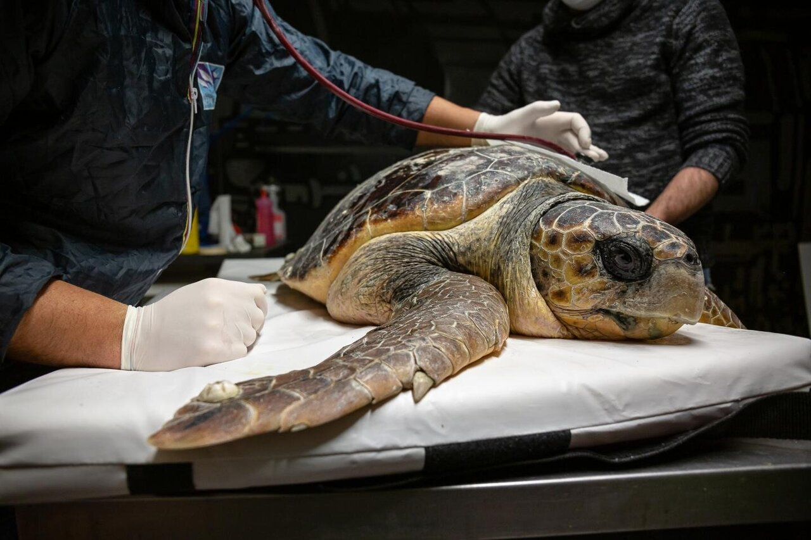
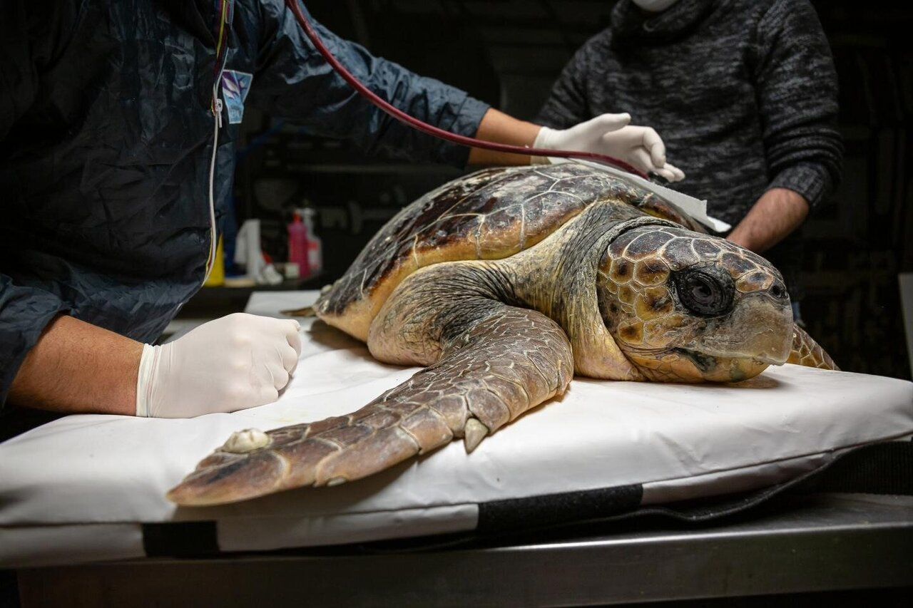
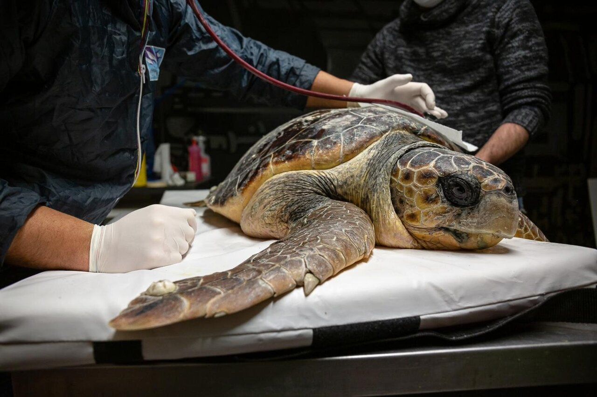

Pollution
Pollution, including water pollution and marine debris, poses significant threats to turtles. Chemical pollutants, plastics, and other debris can be ingested by turtles, leading to health issues and even death. Pollution can also impact the quality of their nesting beaches and marine environments.
Consequences of Turtle Pollution
- Ingestion and Entanglement: Turtles are prone to ingesting or becoming entangled in various types of pollution. Plastic debris, including bags, straws, and fishing nets, can be mistaken for food and ingested by turtles, leading to blockages in their digestive systems and potentially causing injury or death. Fishing lines, ropes, and other discarded fishing gear can entangle turtles, hindering their movement, feeding, and breeding abilities.
- Reduced Reproduction and Hatchling Success: Pollution can have negative impacts on turtle reproduction and hatchling success. Contaminated nesting beaches can affect egg development and hatchling survival.
- Population Decline: The combined effects of pollution on turtles, including direct mortality, reduced reproduction, and compromised health, can lead to population decline.
- Reduce Plastic Use: Plastics are a major source of pollution in turtle habitats. Reduce your consumption of single-use plastics, such as bags, bottles, and straws.
- Proper Waste Disposal: Dispose of waste responsibly. Recycle whenever possible and ensure that trash is properly contained and disposed of in designated bins.
- Support Conservation Organizations: Support and get involved with organizations working to protect turtles and their habitats.
How we can prevent turtles from pollution
 

